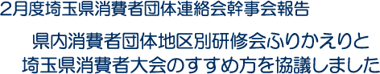

|
 |
埼玉県消費者団体連絡会 2月22日（金）15時30分より、コープみらい コーププラザ大宮にて、2月度幹事会を開催し、5団体（埼玉県生協連・新婦人・母親大会連絡会・公団自治協・さいたま市消団連）8人が出席しました。 【審議事項】 1．県内消費者団体地区別研修会ふりかえり
2．関東農政局との意見交換会ふりかえり
3．埼玉県食品安全局との懇談会について（食の安全県民会議含む）
4．埼玉消団連2019年度年間日程について
5．埼玉県消費者大会について
6．埼玉消団連2018年度ふりかえり→次回 7．その他 (1) 平成30年度「消費者問題シンポジウムinさいたま」（3/9） 【報告・確認事項】 1．食の安全に関わる行政や各団体の取り組み、消費者に関わる行政や各団体の取り組み 2．1月度幹事会報告 3．各団体から活動報告 次回日程 3月22日（金）12：30～ 埼玉県生協連会議室 |